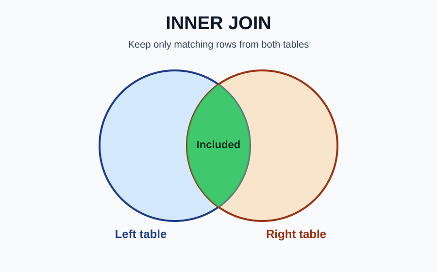
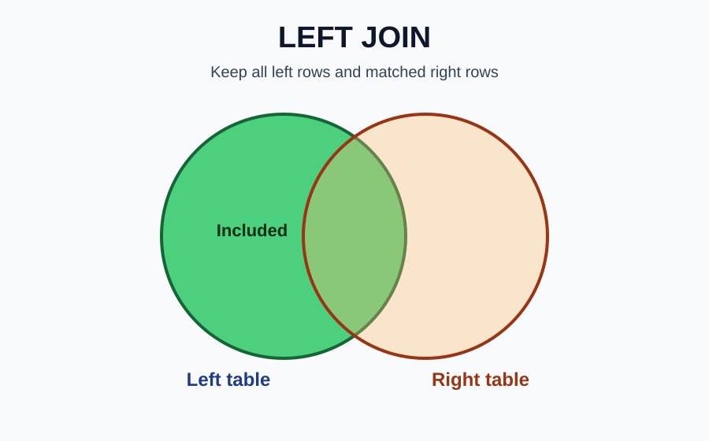
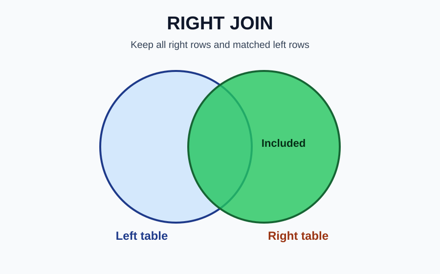
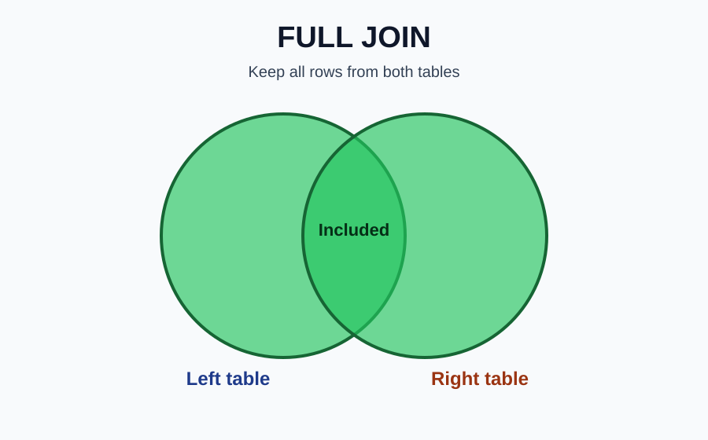
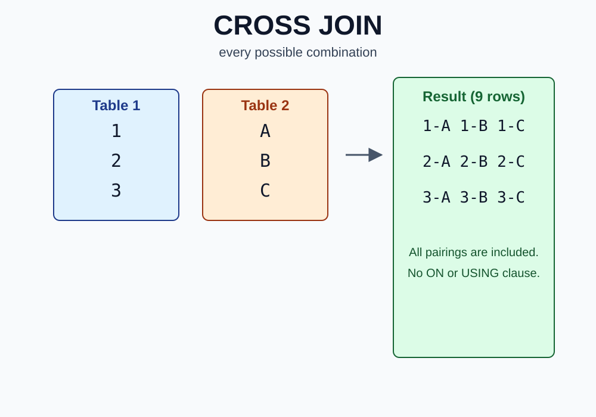
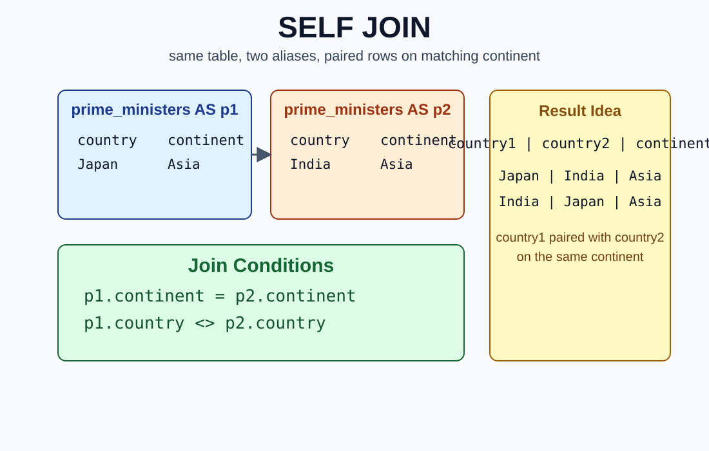
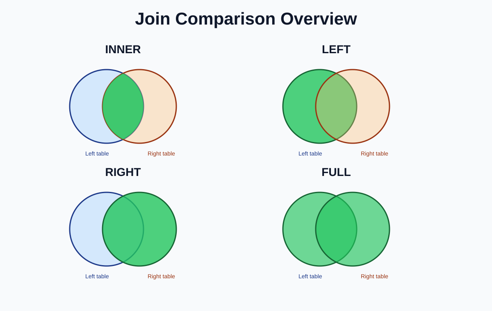

Back to Course 3 landing page | Open Join Business Scenarios
A SQL join combines rows from two tables based on a matching rule. Joins matter because real data is usually split across multiple related tables.
returns only matching rows from both tables

SELECT c.name, l.name FROM countries AS c INNER JOIN languages AS l USING (code);returns all rows from the left table and matching rows from the right table
LEFT JOIN is also called LEFT OUTER JOIN

SELECT c.name, l.name FROM countries AS c LEFT JOIN languages AS l USING (code);returns all rows from the right table and matching rows from the left table
RIGHT JOIN is also called RIGHT OUTER JOIN
less common because it can usually be rewritten as LEFT JOIN by swapping table order

SELECT c.name, l.name FROM countries AS c RIGHT JOIN languages AS l USING (code);returns all matched rows plus unmatched rows from both tables
FULL JOIN is also called FULL OUTER JOIN
conceptually, FULL JOIN gives LEFT JOIN + RIGHT JOIN style coverage

SELECT c.name, l.name FROM countries AS c FULL JOIN languages AS l USING (code);CROSS JOIN returns every possible combination of rows from the two tables. It does not use ON or USING. If table A has 3 rows and table B has 3 rows, the result has 9 rows.

SELECT
p1.prime_minister,
p2.president
FROM prime_ministers AS p1
CROSS JOIN presidents AS p2
WHERE p1.continent = 'Asia'
AND p2.continent = 'South America';A self join is when a table is joined to itself. It does not use a special SELF JOIN keyword. Instead, the same table appears twice with different aliases. Self joins are useful when comparing rows within the same table, such as pairing countries from the same continent.

SELECT
p1.country AS country1,
p2.country AS country2,
p1.continent
FROM prime_ministers AS p1
INNER JOIN prime_ministers AS p2
ON p1.continent = p2.continent
AND p1.country <> p2.country;| Join type | What it keeps | Outer join? | Common use |
|---|---|---|---|
| INNER JOIN | matching rows only | No | Keep only matched records |
| LEFT JOIN | all left + matching right | Yes | Preserve complete left-side list |
| RIGHT JOIN | all right + matching left | Yes | Preserve complete right-side list |
| FULL JOIN | all matched + unmatched from both sides | Yes | Compare overlap/gaps |
| CROSS JOIN | every possible row combination | No | generate all pairings/combinations |
| SELF JOIN | rows from the same table matched to other rows | Depends on join used | compare or pair rows within one table |
LEFT, RIGHT, and FULL belong to the outer join family. INNER JOIN and CROSS JOIN are not outer joins. SELF JOIN is a pattern, not a separate join keyword; it can use INNER JOIN, LEFT JOIN, or another join type depending on the goal.

CROSS JOIN and SELF JOIN are shown separately above.